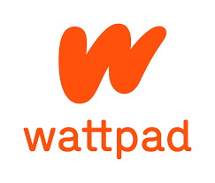

Wattpad

Wattpad takes everything you love about storytelling, and turns it into a social, on-the-go experience. The result is a one-of-a-kind adventure in creation and discovery.
Today, the global Wattpad community is made up of more than 65 million people. We’re proudly based in Toronto, Canada, but Wattpad stories transcend borders, interests, and language.
A captivated audience
In a world of 7-second attention spans, people everywhere still long to be immersed in content that matters to them. The Wattpad community collectively spends an incredible 15 billion minutes each month using Wattpad.
Freedom to discover and create
Wattpad gives people from around the world access to an audience of millions, and connects them with content they can’t find anywhere else.
You can discover the things that speak to you, or choose to create them from scratch. It’s the freedom to express yourself with an authentic voice, and the knowledge that you will be heard